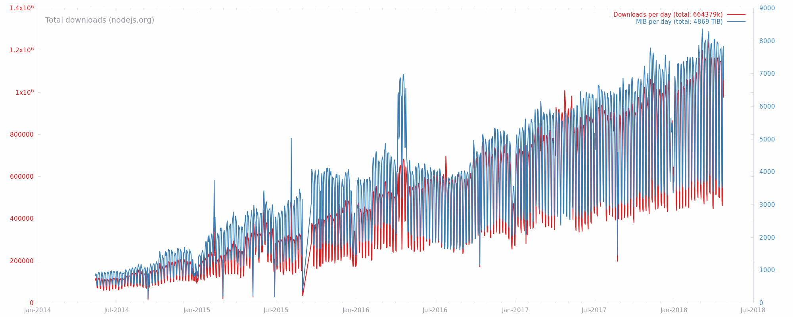
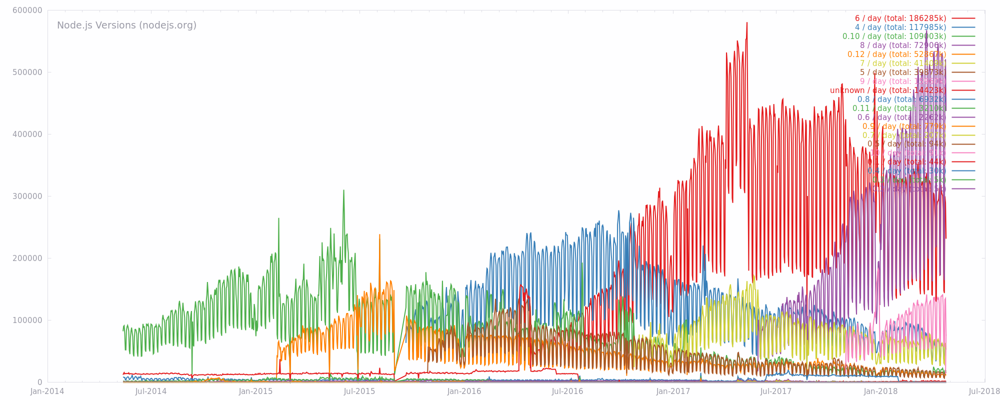
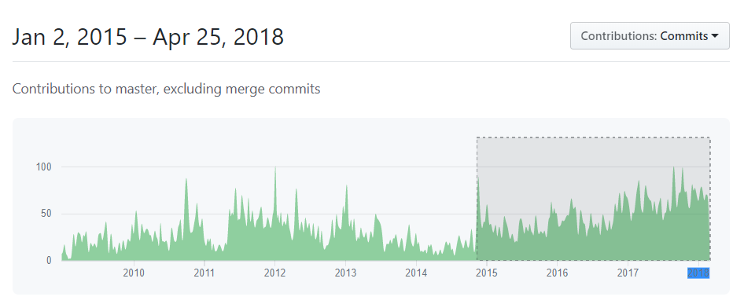

Working on Node.js Core
Who am I?
I'm an Open Source Architect for nearForm.
- I work on open source pretty much full time.
- I've been doing this for 20 years.
- I've been actively contributing to Node.js since January 2015.
How I got started with Node.js
Take 1
My first experience attempting to contribute to Node.js was... interesting.
I found a bug in the HTTP module and was told that I "didn't know how this kind of code worked."
I submitted a PR fixing the bug and walked away.
Rule #1:
Don't make assumptions about what people may or may not know.
Any assumption you make is likely wrong.
How I got started with Node.js
Take 2
I was working for IBM and they wanted to start using Node.js.
A little thing called io.js happened.
IBM asked me to get involved and help fix things.
I was pleasantly surprised.
Node.js core contributors really did care about their community. They just needed a better process.
Rule #2:
Do not ignore your contributors or your community.
Without them, the project is not viable.
What did I do first?
I spent my first three months triaging issues and pull requests.
I closed over a thousand stale issues.
I took the time to learn the code, and more importantly, took the time to learn the people.
We began to build a better process.
Rule #3:
The people are the most important part of any software project.
Fast forward three years...
- I am a member of the Technical Steering Committee
- I served on the Node.js Foundation Board of Directors
- I've been the release manager for every Node.js major release since 4.0
- I've introduced HTTP/2, WHATWG URL, the new Buffer constructors, WHATWG TextDecoder, and more...
Rule #4:
Start small.
Most of the time, it's the small things that have the most impact.
Let's talk about Node.js
- 22,087 Total Commits as of 3:30pm on April 25th.
- 488 Releases over it's lifetime.
- 1,978 contributors.
- 118 people with commit access to nodejs/node.
- 48k+ Stars and 10k+ Forks
- 137 GitHub repositories.
- 564 people in the GitHub organization.
- As of right now, there are 5 supported major release lines (4, 6, 8, 9 and 10)
On April 24th (Node.js 10.0.0 Release day) we had 1,137,248 downloads, totalling 7+ TiB.
(1 TiB === 240 bytes)
On April 24th, Node.js 8 had 521k+ downloads. Node.js 6 had 289k+ downloads.
(Node.js 10 had 13k+ downloads on day 1, and 77k+ on day 2)
This is all a long way of saying that Node.js is massive.
Pull Requests
There have been 1500+ pull requests already this year. 
- Pull requests generally stay open at least 48-72 hours.
- Semver-patch and semver-minor must have at least one sign-off.
- Semver-major must have at least 2 TSC member sign-offs.
- Every code change must pass CI and linting.
- The regular test suite contains 2200+ unit tests.
- CI runs on 45 different OS and Architecture Combinations.
- Semver-major changes are smoke-tested against major ecosystem modules.
- Doc changes are also linted.
Major releases happen every 6 months.

- Odd-numbered majors...
- Released in October
- Maximum of 9 months support.
- Even-numbered majors...
- Released in April
- Enter Long Term Support in October
- 18 months of active support
- 12 months of maintenance support
(Odd-numbered does not mean "experimental")
Security is taken very seriously.
- Report possible vulnerabilities to security@nodejs.org.
- We use HackerOne to triage, manage, and disclose issues.
- We issue our own CVE's.
- Responsible disclosure.
- New Security Bug Bounty Program.
New code is only one way of contributing.
- Backporting changes.
- Community Committee
- Working Groups (e.g. modules, release, security, website, build, etc)
- Help Repo (https://github.com/nodejs/help)
- Mentorship Program (https://github.com/nodejs/mentorship)
Getting Started
- I recommend starting the way I did:
- Help triage issues.
- Focus on what you know.
- Look for the "Good First Issue" label.
- Remember the rules:
- Don't make assumptions.
- Don't ignore contributors or the community.
- The people are most important.
- Start small.
One final thing...
Open Source is Art.
We are the artists.
Embrace the creativity and the fun.
Take care of yourself. Avoid burn out.
If you are a company that benefits from open source...
You have an obligation to support those who create it.
Thank you.
- Twitter: [@jasnell](https://twitter.com/jasnell) - GitHub: [@jasnell](https://github.com/jasnell)